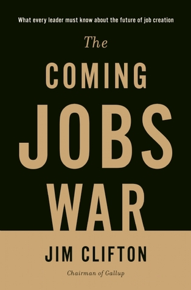

The Coming Jobs War by Jim Clifton
Sunday February 11, 2018
I read this book because current populist, protectionist urges seem like nationalistic competition for globally dwindling jobs, which might be called a "jobs war," and I wondered if Jim Clifton, the leader of Gallup, had unique insight on this phenomenon through the polling and research of his company. Unfortunately, the CEO's self-published book is surprisingly light on evidence, heavy on political proselytizing and advertising for Gallup. Jim Clifton is a slightly more sophisticated Robert Kiyosaki.
I'm surprised nobody, for the sake of Gallup's image, prevented Clifton from publishing his solution to high healthcare costs in the US, which has two prongs: (a) have people die sooner, and (b) fat-shaming. I'm not exaggerating:
'Somebody has to tell Uncle Louie it's time to cross to the other side and go join his friends, not run doctor to doctor, accepting one low-probability procedure after another.' (pages 155-156)
'Unfit should mean something worse than it currently does. Unfit should mean "intervention required." Unfit should mean less employable because unfit is a cause of lower energy.' (page 160)
Even if there are germs of reasonable ideas buried in what Clifton espouses, it's hard to get past his caustic victim-blaming, which is most extreme on healthcare, but present throughout.
Clifton sings the praises of entrepreneurs, with a kind of great man delusion blended with borderline eugenic fatalism.
'Some leaders even believe that anyone can be trained to be an entrepreneur. This is a mistaken assumption. Entrepreneurs have a rare gift. My estimate is that for every 1,000 people, there are only about three with the potential to develop an organization with $50 million or more in annual revenue.' (page 96)
'Nothing fixes bad managers, not coaching, competency training, incentives, or warnings – nothing works. A bad manager never gets better.' (page 114)
Jim Clifton became CEO of Gallup when and because his father, Don Clifton, bought Gallup and installed him as CEO. It's a little hard to take him seriously about individuals' abilities to be totally self-made, or when, with a perfect lack of self-awareness, he goes on to talk about the importance of fixing schools.
Even the core premise of the book, that "What the whole world wants is a good job," isn't well supported with evidence. I had assumed there would be some detailed analysis of polls, maybe some psychological research, but the closest thing to this didn't come very close at all:
'Of the 7 billion people on Earth, there are 5 billion adults aged 15 and older. Of these 5 billion, 3 billion tell Gallup they work or want to work.' (page 2)
So the strongest evidence provided that everyone wants to work is that 60% of adults say they do work, or want to work. I have no way of knowing whether "wanting to work" is separated from "wanting to have a decent standard of living." For example, how many people would want to work if they were guaranteed a basic income and social services?
I also expected Clifton would address job loss trends due to automation and so on, but there's scarcely a mention. He maintains that people just need to keep making companies, and that will make jobs. He is singularly focused on keeping US GDP higher than China's, never mind per-capita GDP or the strength of the connection between jobs and GDP.
Here are some questions listed in a section called "Defective employees." The questions are supposed to both help evaluate managers and "neatly factor all workers into the three categories of engaged, not engaged, and actively disengaged" (page 104):
- I know what is expected of me at work.
- I have the materials and equipment I need to do my work right.
- At work, I have the opportunity to do what I do best every day.
- In the last seven days, I have received recognition or praise for doing good work.
- My supervisor, or someone at work, seems to care about me as a person.
- There is someone at work who encourages my development.
- At work, my opinions seem to count.
- The mission or purpose of my organization makes me feel my job is important.
- My associates or fellow employees are committed to doing quality work.
- I have a best friend at work.
- In the last six months, someone at work has talked to me about my progress.
- This last year, I have had opportunities at work to learn and grow.
Most of these items map onto good advice for companies, but number ten's appearance on the list I think is symptomatic of a "death of science" problem in analysis. Why is "I have a best friend at work" on this list? I suspect the answer is that having a best friend at work is associated with being less likely to quit, and largely independent of other factors, so the item looks good statistically, despite being mostly useless to employees or managers.
Sometimes it's possible to see in Clifton's positions what could be genuine caring for people: a desire that everyone reach their full potential. Supporting people's strengths sounds good, and some of the ideas in the book are not all bad. But there are so many bad ideas, it's like picking through a dumpster.
I had thought that a book from Gallup might have interesting, relevant data and analysis. I really like the idea of using poll data to better understand the world. I had only known of Gallup's polling operation, not their management consulting side. Unfortunately, based on this book, it seems management consulting dominates their attention.
The only people who should read this book are those considering working with Gallup, the better to understand what they would be getting into.
